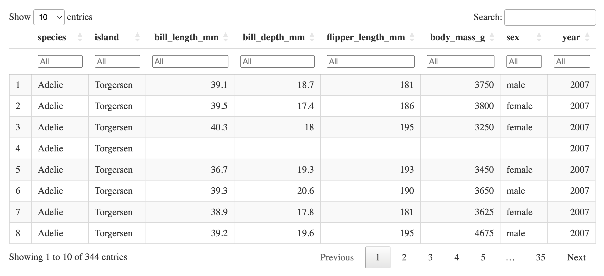
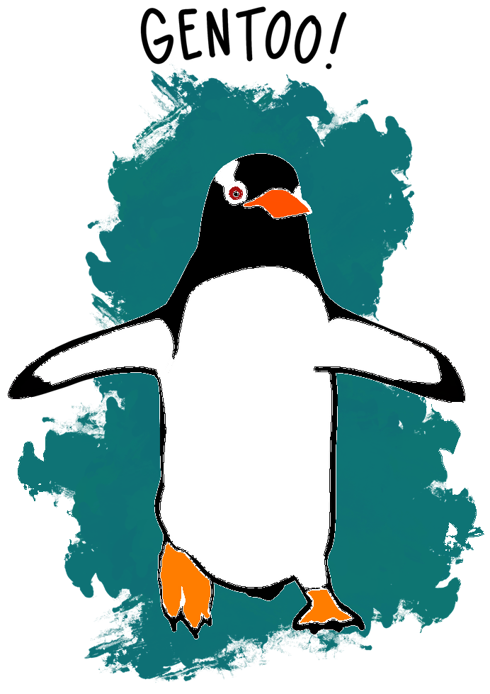

library(palmerpenguins)
library(DT)
datatable(data = penguins, class = "cell-border stripe", filter = "top")7 Create tables
Welcome to the tutorial of the Practice R book (Treischl 2023). Practice R is a text book for the social sciences which provides several tutorials supporting students to learn R. Feel free to inspect the tutorials even if you are not familiar with the book, but keep in mind these tutorials are supposed to complement the Practice R book. 
In Chapter 8, we learned how to create documents with rmarkdown, but in this tutorial we will focus on tables (Allaire et al. 2022). I tried to convince you that R is an excellent companion to create documents, but we only discovered the tip of the iceberg when it comes to tables. We focused on the flextable (Gohel and Skintzos 2022), huxtable (Hugh-Jones 2022), and the stargazer package (Hlavac 2022) because they make it comfortable to create tables to report the results of an analysis.
There are many more packages to create tables, each specialized for their specific output format (e.g., HTML, PDF) and they each rely on a different approach to create tables. It is up to you to decide which one suits you best. You can stick to the introduced packages if you are happy with the tables we made in Chapter 8. However, this tutorial gives a glimpse of other approaches and potential next steps.
For example, consider the DT packages to create interactive HTML tables (Xie, Cheng, and Tan 2022). The next console shows an illustration with output from the penguins data which we will use in this tutorial. The datatable function returns the HTML output, the user can even sort or filter the data.

Instead of creating HTML tables, we will explore different packages to create tables for static documents such as PDF files. First, I introduce the gt package because it makes elegant tables and we use its framework to underline why different packages rely on different frameworks. Next, I highlight the kableExtra package (Zhu 2021) because it provides many cool features for PDF (and HTML) documents. Finally, we pick up where we left and practice. We repeat the main functions of the huxtable package, but this time we reduce our work effort by developing our own table functions.
# Makes sure the following packages have been installed:
library(DT)
library(dplyr)
library(gt)
library(huxtable)
library(kableExtra)
library(modelsummary)
library(tidyr)7.1 The gt package
The R community has developed many cool packages to create tables. They rely on different approaches, have a different aim, or are specialized for different output formats. For example, the gt package creates elegant tables for PDF and HTML files and it outlines its approach to create tables graphically (Iannone et al. 2022). The next Figure shows the parts to create a gt table. 
Approaches to create customized tables can quickly become complex, since even a simple table includes many parts (e.g., header, labels, body, etc.) that need to be defined, formatted, and generated for a certain output. Irrespective of the package, the first step to create a table are often similar and not complicated. We thus need to prepare the output and give it to the package. As the next console shows, I estimated the mean of several variables for each species of the penguins data which we will use as an example input for the table. The corresponding gt() function returns the input as a simple, but elegant table.
# Create table output
penguins_table <- penguins |>
group_by(species) |>
drop_na() |>
summarise(across(bill_length_mm:flipper_length_mm, mean))
# Create a gt table
library(gt)
gt_tbl <- gt(penguins_table)
gt_tbl| species | bill_length_mm | bill_depth_mm | flipper_length_mm |
|---|---|---|---|
| Adelie | 38.82397 | 18.34726 | 190.1027 |
| Chinstrap | 48.83382 | 18.42059 | 195.8235 |
| Gentoo | 47.56807 | 14.99664 | 217.2353 |
The package has functions and options to improve the default result. For example, fmt_number() rounds numerical columns; we can format the table header (tab_header) and the column labels (cols_label) with the md() function which interprets the input as Markdown. By the way, the html() does essentially the same for HTML code. Never mind if are not yet familiar with HTML, Chapter 11 gives you a hands on and the next console shows the discussed code and table.
# Improve the table
gt_tbl |>
fmt_number(
columns = c(bill_length_mm, bill_depth_mm, flipper_length_mm),
decimals = 2
) %>%
tab_header(
title = md("**The Palmerpenguins**")
) |>
cols_label(
species = "Species",
bill_length_mm = md("Bill Length (mm)"),
bill_depth_mm = md("Bill Depth (mm)"),
flipper_length_mm = md("Flipper Length (mm)")
)| The Palmerpenguins | |||
| Species | Bill Length (mm) | Bill Depth (mm) | Flipper Length (mm) |
|---|---|---|---|
| Adelie | 38.82 | 18.35 | 190.10 |
| Chinstrap | 48.83 | 18.42 | 195.82 |
| Gentoo | 47.57 | 15.00 | 217.24 |
Like this, there are many cool packages to create tables, but depending on our aim, it may become quite complicated. Let me underline this point with the kableExtra package.
7.2 The kableExtra package
You can create awesome HTML and LaTeX tables with knitr::kable() and the kableExtra package. As we have seen before, the first step is not complicated, we need an input and the kbl() function returns a basic table.
# https://haozhu233.github.io/kableExtra/awesome_table_in_html.html
# booktabs = TRUE
penguins_table %>%
kbl()| species | bill_length_mm | bill_depth_mm | flipper_length_mm |
|---|---|---|---|
| Adelie | 38.82397 | 18.34726 | 190.1027 |
| Chinstrap | 48.83382 | 18.42059 | 195.8235 |
| Gentoo | 47.56807 | 14.99664 | 217.2353 |
The package provides many features to adjust the table. For example, there are predefined rules (based on CSS, see Chapter 11) to style the appearance of a HTML table. See what happens if you add kable_styling(). It returns the table in minimal style.
# Styles for HTML tables
penguins_table %>%
kbl(booktabs = T) %>%
kable_styling()In a similar vein, there many options to style an HTML table. The bootstrap_options returns striped cells in white and light gray, we can adjust the width of the table (e.g., full_width); and define the position of the table.
# Further options of an HTML table
kbl(penguins_table) %>%
kable_styling(bootstrap_options = c("striped", "hover"))Unfortunately, all flexible approaches to create tables become complex if we want to customize a table in more detail. The next console shows a complicated illustration. I adjusted the header, I used colors to highlight values, and I inserted an inline histogram of depict flipper_length_mm. Please ignore the code details and inspect the package vignette for more information. I will not outline how it works, but it underlines how complex the code can become.
# Customize the table in LATEX
peng_split <- split(penguins$flipper_length_mm, penguins$species)
penguins_table$flipper_length_mm2 <- ""
penguins_table$species <- ""
penguins_table %>%
kbl(booktabs = TRUE, col.names = c(
"Species",
"Bill length",
"Bill Depth",
"Flipper Length",
"Histogram"
)) |>
kable_paper(full_width = FALSE) |>
kable_styling(font_size = 10) |>
row_spec(0, bold = T, font_size = 12) |>
column_spec(1,
image = spec_image(c(
"images/ch_08/p1.png",
"images/ch_08/p2.png",
"images/ch_08/p3.png"
), 200, 100)
) |>
column_spec(2,
bold = T,
color = spec_color(penguins_table$bill_length_mm[1:3])
) |>
column_spec(5,
bold = T,
image = spec_hist(peng_split, width = 200, height = 100)
)| Species | Bill length | Bill Depth | Flipper Length | Histogram |
|---|---|---|---|---|
| 38.82397 | 18.34726 | 190.1027 | ![]() |
|
| 48.83382 | 18.42059 | 195.8235 | ![]() |
|
|  | 47.56807 | 14.99664 | 217.2353 | ![]() |
Is it worth to create such customized tables? It depends on your goal and the possibilities to recycle the code. Overall, all those different packages rely on different approaches to generate tables. There is not one packages for all purposes and it depends on your taste and needs or which approach you prefer. For this reason this tutorial tried to raise awareness that several excellent packages to create tables exist. I did not even discuss them all, but I have another one for the road.
Consider the modelsummary package because it provides many features to create tables for models (Arel-Bundock 2023). Furthermore, the datasummary_skim() creates a nice summary table. It even let you determine the output style and change its overall appearance. Pick a output style, for example, flextable, gt, or kableExtra.
# output style: gt, kableExtra, flextable, huxtable
library(modelsummary)
datasummary_skim(penguins, output = "gt", histogram = FALSE)| Unique | Missing Pct. | Mean | SD | Min | Median | Max | |
|---|---|---|---|---|---|---|---|
| bill_length_mm | 165 | 1 | 43.9 | 5.5 | 32.1 | 44.5 | 59.6 |
| bill_depth_mm | 81 | 1 | 17.2 | 2.0 | 13.1 | 17.3 | 21.5 |
| flipper_length_mm | 56 | 1 | 200.9 | 14.1 | 172.0 | 197.0 | 231.0 |
| body_mass_g | 95 | 1 | 4201.8 | 802.0 | 2700.0 | 4050.0 | 6300.0 |
| year | 3 | 0 | 2008.0 | 0.8 | 2007.0 | 2008.0 | 2009.0 |
To report research findings, customized tables are definitely worth the trouble, but we can reduce our effort to create tables. Let us switch back to the huxtable package and improve our skills to create tables for research findings.
7.3 The huxtable package
Let us revise what we learned in Chapter 8. First, we created a table with the huxreg function and in a second step I introduced some options to improve the table. I already estimated three example linear regression models (m1, etc.). Can you create a regression table with the huxtable package?
# The models
m1 <- lm(body_mass_g ~ bill_length_mm,
data = penguins
)
m2 <- lm(body_mass_g ~ bill_length_mm + flipper_length_mm,
data = penguins
)
m3 <- lm(body_mass_g ~ bill_length_mm + flipper_length_mm + sex,
data = penguins
)
# The minimal code
library(huxtable)
huxreg(m1, m2, m3)| (1) | (2) | (3) | |
|---|---|---|---|
| (Intercept) | 362.307 | -5736.897 *** | -5433.534 *** |
| (283.345) | (307.959) | (286.558) | |
| bill_length_mm | 87.415 *** | 6.047 | -5.201 |
| (6.402) | (5.180) | (4.860) | |
| flipper_length_mm | 48.145 *** | 48.209 *** | |
| (2.011) | (1.841) | ||
| sexmale | 358.631 *** | ||
| (41.572) | |||
| N | 342 | 342 | 333 |
| R2 | 0.354 | 0.760 | 0.807 |
| logLik | -2696.987 | -2527.741 | -2426.664 |
| AIC | 5399.975 | 5063.482 | 4863.327 |
| *** p < 0.001; ** p < 0.01; * p < 0.05. | |||
In the second step, I outlined that we can omit coefficients(omit_coefs), adjust the reported statistics, and add a note to inform the reader about the model. These options are not a comprehensive list, but they illustrated some of the typical steps to create a table for a publication. Thus, omit the model’s intercept ((Intercept)), pick some statistics (e.g., nobs for N; r.squared), and add a note. In addition, format the returned numbers of the table with number_format.
# Show my models via huxreg()
huxreg(m1, m2, m3,
omit_coefs = "(Intercept)",
statistics = c(`N` = "nobs", `R²` = "r.squared"),
number_format = 2,
note = "Note: Some important notes."
)| (1) | (2) | (3) | |
|---|---|---|---|
| bill_length_mm | 87.42 *** | 6.05 | -5.20 |
| (6.40) | (5.18) | (4.86) | |
| flipper_length_mm | 48.14 *** | 48.21 *** | |
| (2.01) | (1.84) | ||
| sexmale | 358.63 *** | ||
| (41.57) | |||
| N | 342 | 342 | 333 |
| R² | 0.35 | 0.76 | 0.81 |
| Note: Some important notes. | |||
We can recycle a lot of code the next time we need to report a similar table, but there are still a lot of steps involved to create such a table. And who can remember all those options? So, we can define what the table should look like, without the need to rebuild a table from scratch every time: We improve our coding skills by learning how to create our own table functions. We already defined the most important options to create the table. The next time we create a similar table, we need to update the estimated models, text labels, or the note.
Create a new function: Give the function a name (e.g., my_huxreg) and insert the code from the last step into the body of the function. As a first step, the function should only update the included models. Instead of the function parameters, put three points (...) inside the function() and the huxreg() function instead of the model names. Such a dot-dot-dot argument allows us to send uncounted numbers of arguments (here models) to the huxreg() function. Moreover, create a list with model names (modelfits) and test the approach by running the my_huxreg() function with the estimated models.
# Create your own huxreg function
my_huxreg <- function(...) {
huxreg(...,
omit_coefs = "(Intercept)",
statistics = c(`N` = "nobs", `R²` = "r.squared"),
number_format = 2,
note = "Important note"
)
}
# Create a list of models
modelfits <- list(
"Model A" = m1,
"Model B" = m2,
"Model C" = m3
)
my_huxreg(modelfits)| Model A | Model B | Model C | |
|---|---|---|---|
| bill_length_mm | 87.42 *** | 6.05 | -5.20 |
| (6.40) | (5.18) | (4.86) | |
| flipper_length_mm | 48.14 *** | 48.21 *** | |
| (2.01) | (1.84) | ||
| sexmale | 358.63 *** | ||
| (41.57) | |||
| N | 342 | 342 | 333 |
| R² | 0.35 | 0.76 | 0.81 |
| Important note | |||
We only passed the models via the function, but we can integrate further function parameters to improve the approach. For example, each time we create a new table, text labels for the variables names (coefs_names) are needed; we may omit different variables (drop) from the models; and - depending on the outcome and the reported models - we should adjust the message of the note. Instead of providing these options inside the function, include them as parameters and insert their objects names in the my_huxreg function.
# Include option parameters
my_huxreg <- function(..., coefs_names, drop, message) {
huxreg(...,
coefs = coefs_names,
omit_coefs = drop,
statistics = c(`N` = "nobs", `R²` = "r.squared"),
number_format = 2,
note = message
) |>
set_bold(row = 1, col = everywhere) |>
set_align(1, everywhere, "center")
}Moreover, the huxtable is not made for regression tables only, but for tables in general. For this reason the package has much more to offer than the discussed options. Consider the last two lines of code of the solution: I added them to illustrate this point. The set_bold function prints the first row of all columns in bold; and I align numbers (set_align) in the center.
Regardless of the discussed steps, we can now recycle the code by creating a function. We only need to hand over the estimated models and the new information about the models. I already started to create text labels for the coefficients (coefs). Adjust which variables you will drop (droped_coefs); the message option, and insert those objects into the my_huxreg function.
# Option input
coefs <- c(
"Bill length" = "bill_length_mm",
"Flipper length" = "flipper_length_mm",
"Male" = "sexmale"
)
droped_coefs <- c("(Intercept)")
message <- "Note: Some important notes that can change."
# Create table (my_huxreg is based on the solution of the last console)
mytable <- my_huxreg(modelfits,
coefs_names = coefs,
drop = droped_coefs,
message = message
)
mytable| Model A | Model B | Model C | |
|---|---|---|---|
| Bill length | 87.42 *** | 6.05 | -5.20 |
| (6.40) | (5.18) | (4.86) | |
| Flipper length | 48.14 *** | 48.21 *** | |
| (2.01) | (1.84) | ||
| Male | 358.63 *** | ||
| (41.57) | |||
| N | 342 | 342 | 333 |
| R² | 0.35 | 0.76 | 0.81 |
| Note: Some important notes that can change. | |||
We will learn more about automation and text reporting in Chapter 10, but keep in mind that such steps to create your own function are often worth considering, as it makes the code less clunky and reproducible. If you create a document, save your function in a separate R script, and include it in your document via the souce() function in the setup R chunk. It runs the code if you render the document.
Finally, let me briefly introduce Quarto (.qmd), a publishing system to create many different document types. In a similar sense as rmarkdown, it uses knitr and Pandoc to create documents with R. As the illustration from Allison Horst underlines, Quarto is a flexible system since it is not tied to R. As outlined on the homepage: “Quarto was developed to be multilingual, beginning with R, Python, Javascript, and Julia, with the idea that it will work even for languages that don’t yet exist”.

I introduced rmarkdown because it is the classic approach and both procedures are very identical in terms of creating documents. The main difference stems from the YAML header because Quarto standardize the YAML code between different documents types. For example, consider the next console, it compare the YAML header of a default rmarkdown document with a default Quarto document. The latter has a format field instead of the output field, but will create an HTML document with both ways. Certainly there are more differences, but the main steps – code is evaluated via code-chunks, you need to format text via Markdown, etc. – are almost identical.
#rmarkdown YAML
---
title: "Untitled"
output: html_document
---
#Quarto YAML
title: "Untitled"
format: htmlThus, also consider Quarto if you start to create documents on a regular basis, because it provides many templates and an excellent documentation. You can create documents from RStudio after you installed Quarto. Click on the Quarto logo to visit the website.

7.4 Summary
Keep the following R packages, functions, and key insights from Chapter 8 in mind:
Create many different documents with
rmarkdownand adjust the document in the meta section (YAML header)Pandoc runs in the background, converts the file and uses, for example, Latex in case of a PDF file
Adjust code via chunk-options (e.g.,
eval,echo,warning,message)Format text with Markdown and RStudio’s visual markdown editing mode
Start using a citation manager (e.g., Zotero)
Create table with, for example, the
flextable, themodelsummary, and thestargazerpackageCreate a huxtable to display model output (
huxtable::huxreg)Read R code from a file, a connection or expressions (
source)